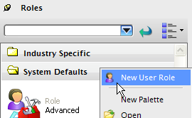
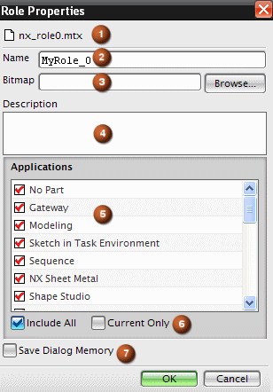
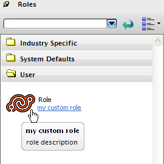

您可以创建定制的角色，以最大程度地满足您的工作需求，角色将使用您指派的角色名称来保存您的工作空间设置，包括定制的菜单/工具条内容和位置。
您的公司可以创造尽可能多的自定义角色，每一个都与特定的任务相关。
由于新的角色将继承用户界面的当前状态，所以将工具条、按钮以及界面设置为想要的状态十分重要。
在资源条上的角色资源板中，右击新建用户角色。

将打开角色属性对话框。
填写角色属性对话框。

存储的 .mtx 文件的名称。
指派给角色的名称。
(可选)选择一个图线以显示新建角色。
(可选)对角色的描述。
角色中引用的应用模块。
构建角色：仅当前是用来捕捉定制的界面。
保存对话框设置。
一旦填写完成，这个对话框将自动创建一个定制的*.mtx 文件，它可以继承当前的用户界面状态。
新的定制角色可以保存在下列位置：用户名称/\AppData\Local\Unigraphics Solutions\NXxx\roles，询问您的系统管理员以获取更多信息。
定制角色显示在角色资源板上的用户文件夹中。

您可以在创建角色之后进行重命名，也可以更改定制角色保存的默认位置。